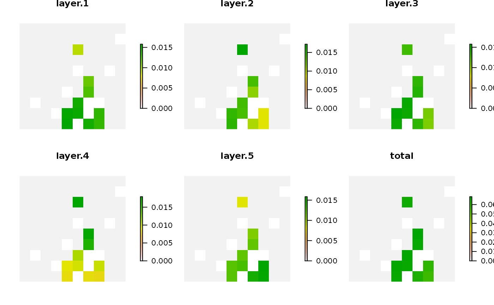

Calculate irreplaceability scores for planning units selected in a solution using the method outlined in Ferrier et al. (2000). Here, scores are calculated separately for each feature within each planning unit. Additionally, a total irreplaceability score is also calculated as the sum of the irreplaceability scores for each planning unit. Note that this function only works for problems with a minimum set objective and a single zone. It will throw an error for other types of problems. Please note that the mathematical formulation for computing these scores needs to be double checked by an expert, and so this functionality should be considered experimental at this point in time.
ferrier_score(x, solution) # S4 method for ConservationProblem,numeric ferrier_score(x, solution) # S4 method for ConservationProblem,matrix ferrier_score(x, solution) # S4 method for ConservationProblem,data.frame ferrier_score(x, solution) # S4 method for ConservationProblem,Spatial ferrier_score(x, solution) # S4 method for ConservationProblem,Raster ferrier_score(x, solution)
Arguments
| x |
|
|---|---|
| solution |
|
Value
A matrix, tibble::tibble(),
RasterLayer, or
Spatial object containing the scores for each
planning unit selected in the solution.
Details
The argument to solution must correspond
to the planning unit data in the argument to x in terms
of data representation, dimensionality, and spatial attributes (if
applicable). This means that if the planning unit data in x
is a numeric vector then the argument to solution must be a
numeric vector with the same number of elements, if the planning
unit data in x is a RasterLayer then the
argument to solution must also be a
RasterLayer with the same number of rows and
columns and the same resolution, extent, and coordinate reference system,
if the planning unit data in x is a Spatial
object then the argument to solution must also be a
Spatial object and have the same number of spatial
features (e.g. polygons) and have the same coordinate reference system,
if the planning units in x are a data.frame then the
argument to solution must also be a data.frame with each
column correspond to a different zone and each row correspond to
a different planning unit, and values correspond to the allocations
(e.g. values of zero or one). Furthermore, solutions must have planning
unit statuses set to missing (NA)
values for planning units that have missing (NA) cost data.
If an argument is supplied to
solution where this is not the case, then an error will be thrown.
References
Ferrier S, Pressey RL, and Barrett TW (2000) A new predictor of the irreplaceability of areas for achieving a conservation goal, its application to real-world planning, and a research agenda for further refinement. Biological Conservation, 93: 303--325.
See also
Examples
# seed seed for reproducibility set.seed(600) # load data data(sim_pu_raster, sim_features) # create minimal problem with binary decisions p1 <- problem(sim_pu_raster, sim_features) %>% add_min_set_objective() %>% add_relative_targets(0.1) %>% add_binary_decisions() %>% add_default_solver(gap = 0, verbose = FALSE) # \dontrun{ # solve problem s1 <- solve(p1) # print solution print(s1)#> class : RasterLayer #> dimensions : 10, 10, 100 (nrow, ncol, ncell) #> resolution : 0.1, 0.1 (x, y) #> extent : 0, 1, 0, 1 (xmin, xmax, ymin, ymax) #> crs : NA #> source : memory #> names : layer #> values : 0, 1 (min, max) #># calculate irreplaceability scores using Ferrier et al. 2000 method fs1 <- ferrier_score(p1, s1) # print irreplaceability scores, # each planning unit has an irreplaceability score for each feature # (as indicated by the column names) and each planning unit also # has an overall total irreplaceability score (in the "total" column) print(fs1)#> class : RasterStack #> dimensions : 10, 10, 100, 6 (nrow, ncol, ncell, nlayers) #> resolution : 0.1, 0.1 (x, y) #> extent : 0, 1, 0, 1 (xmin, xmax, ymin, ymax) #> crs : NA #> names : layer.1, layer.2, layer.3, layer.4, layer.5, total #> min values : 0, 0, 0, 0, 0, 0 #> max values : 0.01579546, 0.01722246, 0.01575790, 0.01793544, 0.01585958, 0.06844167 #># }